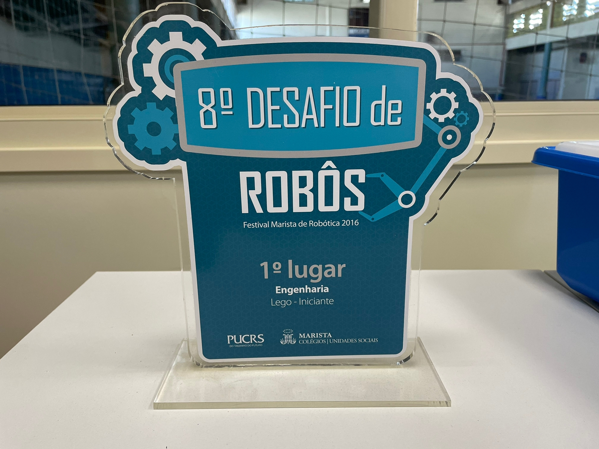
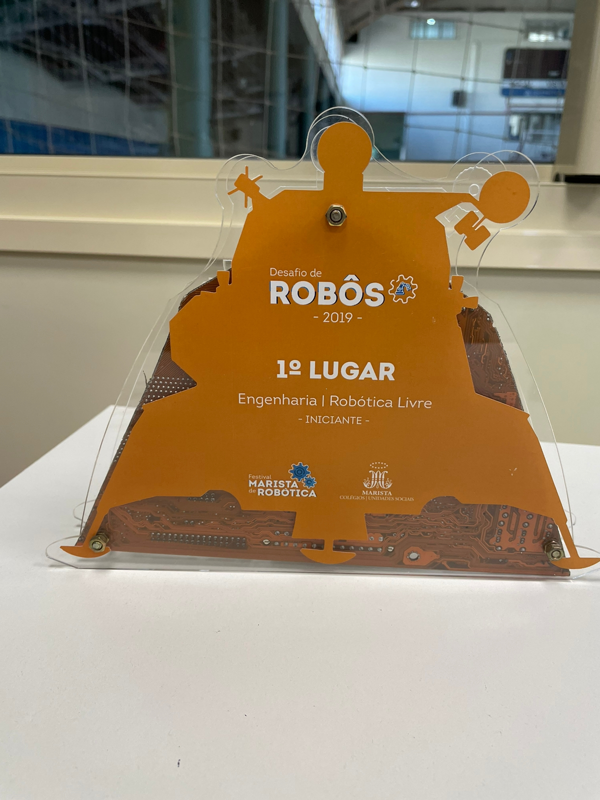
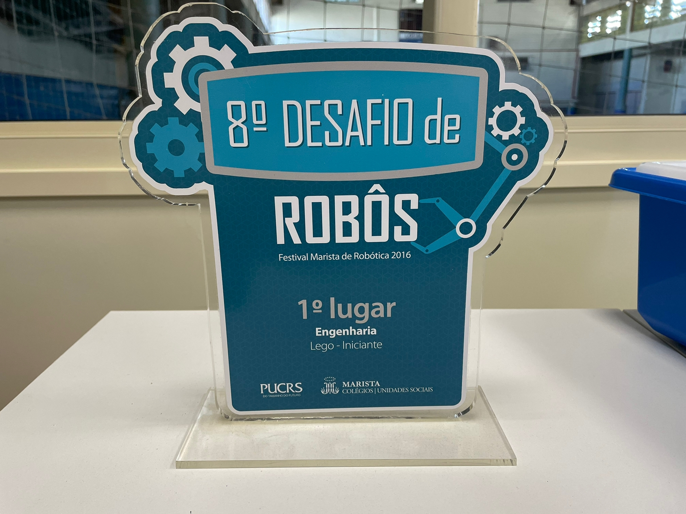
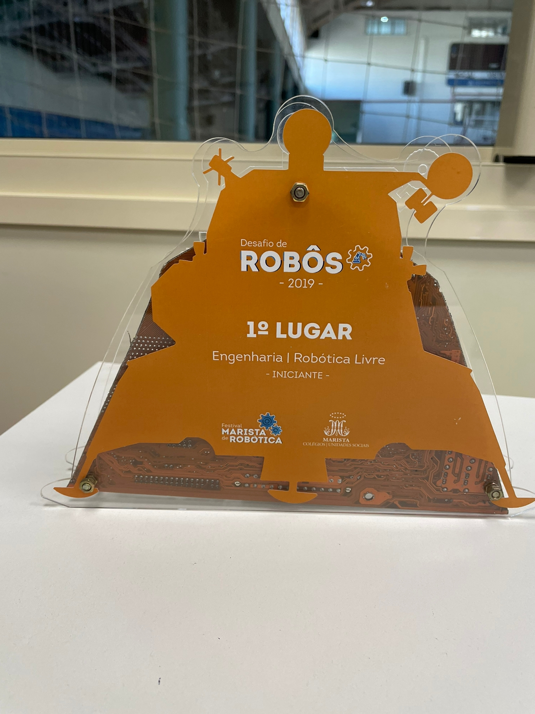
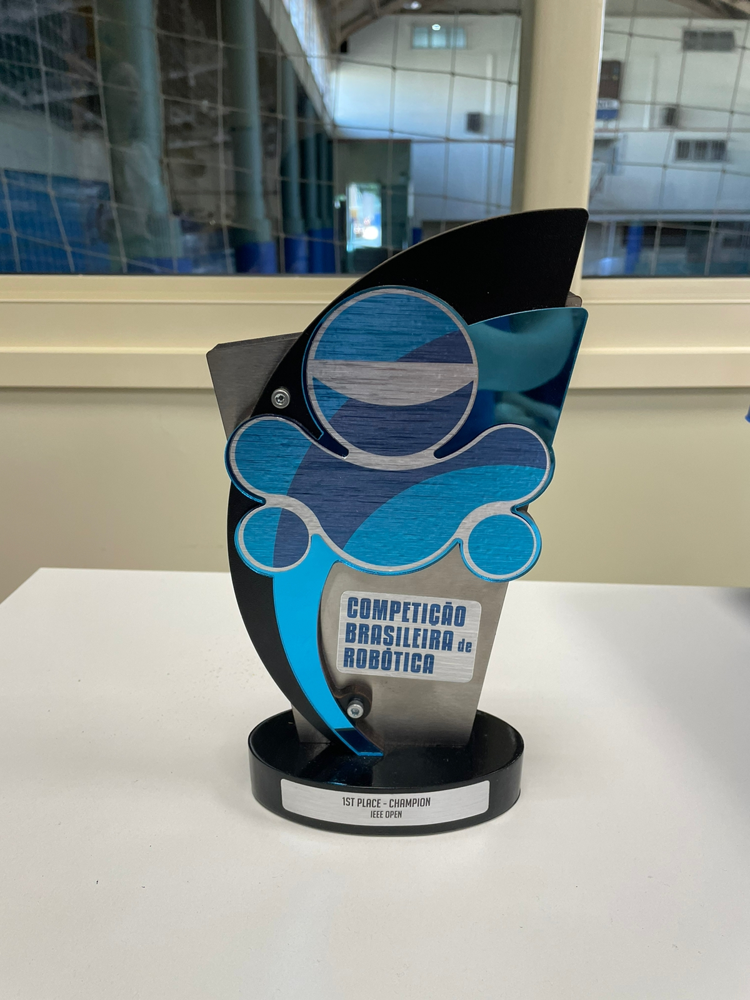
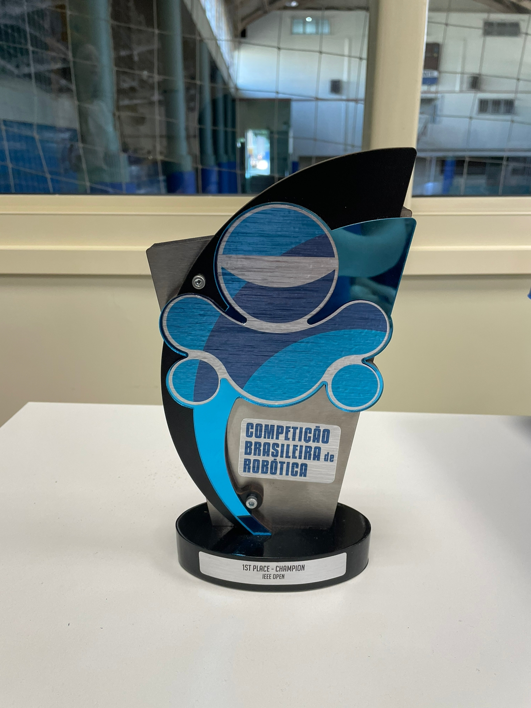

CONQUISTAS
Desde a criação de nossa equipe, sempre tivemos o sonho de participar de campeonatos e festivais em diferentes cantos do Brasil. No entanto, sabíamos que isso nunca seria fácil. Fazer parte de grandes competições exige tempo, determinação e, principalmente, investimento. Felizmente, nossa equipe contou com duas pessoas extraordinárias que, desde 2010, se dedicaram incansavelmente para transformar esse sonho em realidade. Uma dessas pessoas é Vinicios Trentin, mais conhecido como Vini. Ele começou como aluno de robótica e, ao desenvolver uma paixão pela equipe, decidiu dedicar grande parte de sua vida, mesmo após sua formação, para conquistar objetivos incríveis. Apesar de seu semblante sério, Vini é dono de uma personalidade incrível e parceira, sempre disposto a ajudar em qualquer momento do dia – literalmente! O outro grande responsável pela ascensão da equipe Cavalo Vendado é o professor Necleto Panseira Junior, uma figura essencial na nossa trajetória. Professor de física, Necleto combina simpatia, inteligência e um toque de "teorias malucas" que conquistam seus alunos e os levam a se apaixonar pela robótica. Desde os primeiros passos da equipe, ele tem sido um mentor inspirador, incentivando jovens talentos e representando a essência desse sonho que começou há tantos anos.


Com a orientação e dedicação desses dois líderes, conseguimos não apenas participar das maiores competições do Brasil, mas também nos consagrar campeões várias vezes. Nosso esforço nos levou a conquistar oportunidades incríveis, como representar o país em competições internacionais. Um dos destaques foi a participação no FIRST Championship, realizado em Houston, Texas, nos Estados Unidos – uma experiência inesquecível para todos nós.
A equipe "Cavalo Vendado" é um exemplo inspirador de como a união e o trabalho em equipe podem superar qualquer desafio. Desde o início, seus membros entenderam que o sucesso não vem apenas da habilidade individual, mas da capacidade de colaborar, respeitar as diferenças e encontrar força na diversidade de ideias.
Enfrentando obstáculos que pareciam intransponíveis, a equipe nunca recuou. Cada desafio foi uma oportunidade para aprender, crescer e se reinventar. Eles mostraram que, mesmo com os olhos "vendados" por dificuldades, é possível avançar com determinação e confiança no grupo. Essa filosofia os levou longe, abrindo caminhos que inspiraram outras pessoas a acreditar em seu próprio potencial.
Hoje, "Cavalo Vendado" não é apenas um nome, mas um símbolo de superação, resiliência e trabalho coletivo. Suas conquistas refletem o poder de uma equipe que sabe que, juntos, podem alcançar qualquer coisa. Eles provaram que, com união e esforço, é possível transformar limites em possibilidades e inspirar uma legião de seguidores a fazer o mesmo.
Abaixo, apresentamos alguns dos troféus e medalhas que conquistamos ao longo das gerações da equipe, de 2010 a 2024, como símbolo do nosso esforço, paixão e dedicação:

 




 
